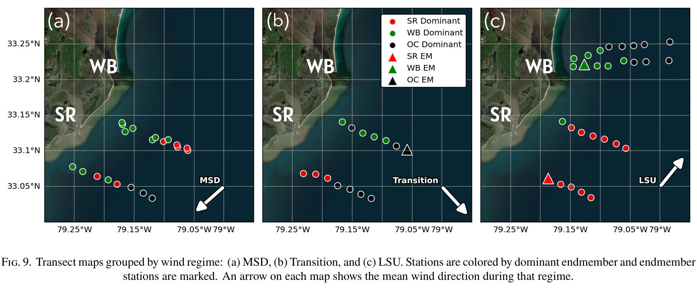
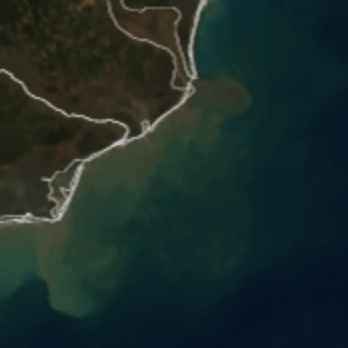
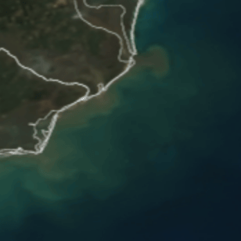

Undergraduate Thesis
End-Member Mixing Analysis of Winyah Bay and Santee River Plumes

This project examines the interacting freshwater plumes of Winyah Bay and the Santee River along the South Carolina coast. Although individual river plumes have been widely studied, interactions between neighboring plumes remain relatively understudied, especially using in-situ observations. This study applies end-member mixing analysis to plume-layer salinity and colored dissolved organic matter (CDOM) to estimate the relative contribution of each source. The results show how wind forcing influences plume transport, overlap, and source dominance across changing coastal conditions.
MODIS Satellite View of the Plumes

Satellite animation showing plume waters advecting southwest during downwelling-favorable and transitioning winds, with a pronounced tidal pulse expanding from Winyah Bay.

Satellite animation showing plume waters advecting northeast during upwelling-favorable winds, including a Winyah Bay tidal pulse expanding and moving in the same direction.
Downloads & Supplementary Materials
{kind=link}
{kind=link}
Citation & Contact
Insert Citation Text